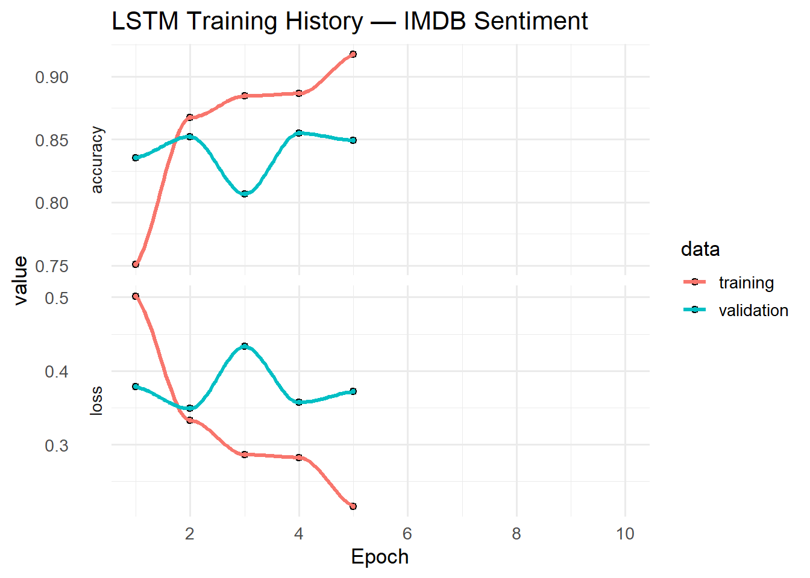

This tutorial introduces deep learning with R, with a focus on Recurrent Neural Networks (RNNs) and their most successful variant, Long Short-Term Memory (LSTM) networks. These architectures are specifically designed to process sequential data — making them especially well suited to tasks in language and text analysis, such as sentiment classification, authorship attribution, text generation, and sequence labelling.
Deep learning has transformed natural language processing over the past decade (Goodfellow, Bengio, and Courville 2016). Unlike classical machine learning methods that rely on hand-crafted features, deep neural networks learn hierarchical representations directly from raw data. For text, this means a model can learn from characters, words, or sentences without requiring manually designed linguistic features. The challenge with language, however, is that meaning is inherently sequential: the word not reverses the polarity of everything that follows it, and a pronoun several sentences earlier may resolve the identity of a noun that comes later. Standard feedforward networks have no mechanism for this kind of temporal reasoning. RNNs and LSTMs were designed precisely to address it.
This tutorial is aimed at intermediate users of R who are comfortable with basic programming and have some familiarity with statistical modelling. No prior knowledge of deep learning or neural networks is assumed. By the end of this tutorial you will be able to:
Explain the core concepts of neural networks, RNNs, LSTMs, and GRUs
Understand the vanishing gradient problem and why it motivates LSTM
Install and configure TensorFlow and Keras in R
Prepare text data for sequence modelling
Build, train, and evaluate an LSTM model for text classification
Apply regularisation techniques to prevent overfitting
Interpret model output and diagnose training problems
Prerequisite Knowledge
Before working through this tutorial, you should be familiar with:
It also helps to have read the Introduction to Text Analysis tutorial, as some concepts (tokenisation, corpora, frequency) are assumed knowledge here.
Citation
Martin Schweinberger. 2026. Deep Learning with R: Recurrent Neural Networks and TensorFlow. The Language Technology and Data Analysis Laboratory (LADAL), The University of Queensland, Australia. url: https://ladal.edu.au/tutorials/deeplearning_tutorial/deeplearning_tutorial.html (Version 2026.04.01), doi: 10.5281/zenodo.19362594.
Setup
Installing Packages
This tutorial requires the keras3 package (previously keras), which provides an R interface to Keras and TensorFlow. TensorFlow itself is installed as a Python library; the keras3 package handles this automatically.
Code
# Run once — comment out after installationinstall.packages("keras3")install.packages("tidyverse")install.packages("ggplot2")install.packages("glue")# Install TensorFlow backend (run once after keras3 is installed)keras3::install_keras(backend ="tensorflow")
Python Dependency
TensorFlow requires Python 3.8–3.11 to be installed on your system. When you run install_keras(), it creates an isolated Miniconda environment named r-keras and installs TensorFlow inside it. You do not need to manage Python manually. If you encounter errors, run keras3::install_keras(envname = "r-reticulate") to use your existing reticulate environment.
What you will learn: The core ideas behind neural networks; how deep learning differs from classical machine learning; and why it is useful for language data.
Deep learning refers to a family of machine learning methods based on artificial neural networks with multiple layers of processing units. The term deep refers to the depth of these networks — the number of successive transformations that input data passes through before producing an output (Goodfellow, Bengio, and Courville 2016).
The fundamental unit of a neural network is the neuron (or node): a mathematical function that takes a weighted sum of its inputs, adds a bias term, and passes the result through a non-linear activation function. Formally, for a neuron \(j\) with inputs \(x_1, \ldots, x_n\):
where \(w_{ij}\) are the learned weights, \(b_j\) is the bias, and \(f\) is an activation function such as the rectified linear unit (ReLU): \(f(x) = \max(0, x)\).
Neurons are arranged in layers. A standard feedforward network has:
An input layer that receives the raw data
One or more hidden layers that transform the representation
An output layer that produces the final prediction
The network learns by adjusting its weights to minimise a loss function (a measure of prediction error) using an algorithm called backpropagation, which propagates error gradients from the output back through the network (Rumelhart, Hinton, and Williams 1986). The weights are updated iteratively using gradient descent, moving slightly in the direction that reduces the loss at each step.
Why Deep Learning for Text?
Classical text analysis methods — bag-of-words, TF-IDF, topic models — treat documents as unordered collections of tokens. Deep learning methods, by contrast, can capture:
Word order: the sequence dog bites man differs from man bites dog
Long-range dependencies: a negation early in a sentence may affect a sentiment word several tokens later
Compositional meaning: the meaning of not bad is not the sum of not and bad
Sub-word patterns: morphological regularities can be captured at the character level
These properties make deep learning particularly powerful for sequence tasks in NLP.
Recurrent Neural Networks
Section Overview
What you will learn: How RNNs process sequences; what a hidden state is; and why simple RNNs struggle with long-range dependencies.
The Core Idea
A Recurrent Neural Network (RNN) is a neural network designed to process sequential data by maintaining a hidden state — a vector that summarises everything the network has seen up to the current time step. At each step \(t\), the RNN receives an input \(x_t\) and updates its hidden state \(h_t\) based on both the current input and the previous hidden state:
where \(W_h\) and \(W_x\) are weight matrices and \(f\) is typically the hyperbolic tangent (\(\tanh\)). The hidden state acts as a form of memory: it encodes information about previous inputs that is relevant to the current prediction.
This design was formalised in the Simple Recurrent Network (SRN) of Elman (1990), one of the earliest systematic studies of what information RNNs actually retain in their hidden states across time. Elman’s experiments with grammatical structure showed that RNNs could, in principle, learn implicit syntactic representations — a finding that foreshadowed modern neural language modelling.
Unrolling Through Time
To understand how RNNs are trained, it helps to visualise the network unrolled through time. An RNN processing a sequence of length \(T\) is equivalent to a deep feedforward network with \(T\) layers, where each layer shares the same weights. Training proceeds via Backpropagation Through Time (BPTT): error gradients are propagated backwards through the unrolled network, updating the shared weights at each time step.
The Vanishing Gradient Problem
BPTT requires multiplying gradients across every time step. Because the same weight matrix \(W_h\) is applied repeatedly, gradients tend to either vanish (shrink exponentially, making early time steps unreachable) or explode (grow exponentially, causing instability).
Bengio, Simard, and Frasconi (1994) provided a rigorous mathematical analysis of this problem, showing that it is a fundamental limitation of gradient descent for sequences with long-range dependencies. For language tasks — where dependencies can span dozens of tokens — this is a severe constraint on what simple RNNs can learn.
Gradient clipping (capping gradient norms during training) partially addresses explosion, but not vanishing. The solution to vanishing gradients required a new architecture: the Long Short-Term Memory.
Long Short-Term Memory Networks
Section Overview
What you will learn: How LSTMs solve the vanishing gradient problem using gating mechanisms; what each gate does; and how to interpret the LSTM cell state as explicit memory.
The LSTM Architecture
The Long Short-Term Memory (LSTM) network was introduced by Hochreiter and Schmidhuber (1997) to address the vanishing gradient problem directly. The key innovation is a cell state\(C_t\) — a separate memory pathway that runs through the entire sequence with minimal transformations, allowing gradients to flow back without vanishing. Access to the cell state is regulated by three gates: learned sigmoid functions that produce values between 0 and 1, controlling how much information is added, retained, or discarded.
The full LSTM update equations at time step \(t\) are:
where \(\sigma\) is the sigmoid function, \(\odot\) is element-wise multiplication, and \([h_{t-1}, x_t]\) denotes concatenation of the previous hidden state and current input.
What Each Gate Does
Gate
Function
Analogy
Forget gate\(f_t\)
Decides what to erase from the cell state
Pressing the delete key
Input gate\(i_t\)
Decides what new information to write to the cell state
Taking notes
Output gate\(o_t\)
Decides what part of the cell state to expose as the hidden state
Reading from notes
The cell state \(C_t\) itself acts as a conveyor belt that carries information across long distances. Because it is updated additively (not multiplicatively across many layers), gradients flow back through it without exponential decay.
A comprehensive empirical evaluation of LSTM variants by Greff et al. (2017) confirmed that all three gates are important contributions: removing any one of them reliably degrades performance across a range of sequence tasks.
Gated Recurrent Units
The Gated Recurrent Unit (GRU), introduced by Cho et al. (2014), is a streamlined variant of LSTM that merges the forget and input gates into a single update gate and eliminates the separate cell state. GRUs have fewer parameters than LSTMs and often achieve comparable performance, particularly on smaller datasets.
In practice, LSTMs and GRUs are largely interchangeable. A useful default is to start with an LSTM, then try a GRU if training speed is a concern or if the dataset is small.
Bidirectional RNNs
A standard RNN reads sequences left to right. A Bidirectional RNN runs two RNNs in parallel — one processing the sequence forward, the other backward — and concatenates their hidden states at each time step. This gives the model access to both past and future context at every position, which is valuable for tasks like part-of-speech tagging or named entity recognition where the label at position \(t\) depends on words that follow as well as words that precede.
Building an LSTM in R
Section Overview
What you will learn: How to prepare text data for an LSTM; how to define, compile, train, and evaluate a Keras LSTM model; and how to interpret training curves.
The Task: Sentiment Classification
We will train an LSTM to classify movie reviews as positive or negative using the IMDB dataset — 25,000 training reviews and 25,000 test reviews, each labelled with a binary sentiment. This is a standard benchmark for text classification and is bundled directly with Keras, making it convenient for learning purposes.
Preparing the Data
Code
# Maximum vocabulary size (most frequent tokens only)max_features <-10000# Maximum sequence length (longer reviews are truncated)maxlen <-200# Load IMDB data — labels are 0 (negative) or 1 (positive)imdb <-dataset_imdb(num_words = max_features)x_train <- imdb$train$xy_train <- imdb$train$yx_test <- imdb$test$xy_test <- imdb$test$ycat(glue("Training samples: {length(x_train)}\n"))
Training samples: 25000
Code
cat(glue("Test samples: {length(x_test)}\n"))
Test samples: 25000
Each review is stored as an integer sequence — each integer is a word index. We pad all sequences to the same length using pad_sequences(), which appends zeros at the beginning of shorter sequences (pre-padding):
Code
x_train <-pad_sequences(x_train, maxlen = maxlen)x_test <-pad_sequences(x_test, maxlen = maxlen)dim(x_train) # Should be (25000, 200)
[1] 25000 200
What Is an Embedding?
Before the LSTM layer, we use an Embedding layer. This maps each integer (word index) to a dense, real-valued vector of fixed dimension (here, 128). These vectors are learned during training alongside the other weights: words that appear in similar contexts end up with similar vectors. Embeddings are a compact, continuous representation of vocabulary that carries far more information than one-hot encoding.
Defining the Model
Code
model <-keras_model_sequential(name ="imdb_lstm") |>layer_embedding(input_dim = max_features,output_dim =128,input_length = maxlen, # add this linename ="embedding") |># LSTM layer: processes the sequencelayer_lstm(units =64,dropout =0.2, # dropout on inputsrecurrent_dropout =0.2, # dropout on recurrent connectionsname ="lstm_1" ) |># Dense output layer: binary classificationlayer_dense(units =1, activation ="sigmoid", name ="output")summary(model)
Dropout (Srivastava et al. 2014) randomly sets a proportion of activations to zero during training, preventing the network from co-adapting to specific patterns and reducing overfitting. In LSTMs, dropout applies to the input connections and recurrent_dropout applies to the recurrent connections (from \(h_{t-1}\) to \(h_t\)). Using a small recurrent dropout (0.1–0.3) is often more beneficial than a large input dropout alone. As recommended by Chollet and Allaire (2018), the same dropout mask is applied at every time step — this is essential for correct regularisation of RNNs.
Compiling and Training
Code
model |>compile(optimizer =optimizer_adam(learning_rate =1e-3),loss ="binary_crossentropy",metrics =c("accuracy"))
Code
history <- model |>fit( x_train, y_train,epochs =10,batch_size =128,validation_split =0.2, # hold out 20% of training data for validationcallbacks =list(callback_early_stopping(monitor ="val_loss",patience =3,restore_best_weights =TRUE ) ))
callback_early_stopping() monitors the validation loss after each epoch and stops training when it has not improved for patience consecutive epochs. Setting restore_best_weights = TRUE ensures that the final model uses the weights from the epoch with the lowest validation loss, not the last epoch (which may be worse due to overfitting). This is an important safeguard against over-training.
# Plot training and validation accuracy / loss over epochsplot(history) +theme_minimal(base_size =13) +labs(title ="LSTM Training History — IMDB Sentiment",x ="Epoch")
Warning in simpleLoess(y, x, w, span, degree = degree, parametric = parametric,
: span too small. fewer data values than degrees of freedom.
Warning in simpleLoess(y, x, w, span, degree = degree, parametric = parametric,
: pseudoinverse used at 0.98
Warning in simpleLoess(y, x, w, span, degree = degree, parametric = parametric,
: reciprocal condition number 0
Warning in simpleLoess(y, x, w, span, degree = degree, parametric = parametric,
: There are other near singularities as well. 4.0804

A well-trained model on this dataset typically achieves around 85–88% test accuracy. If validation loss starts rising while training loss continues to fall, that is a clear sign of overfitting.
A Stacked LSTM: Going Deeper
Section Overview
What you will learn: How to stack multiple LSTM layers; when stacking helps; and how to use return_sequences correctly.
A single LSTM layer learns a single level of sequential abstraction. Stacked LSTMs (multiple LSTM layers on top of each other) can learn hierarchical representations — lower layers may capture local patterns (words and phrases), while higher layers capture more global structure (clauses, discourse). For most NLP tasks, 2–3 LSTM layers offer a good balance of capacity and training cost.
Code
model_stacked <-keras_model_sequential(name ="stacked_lstm") |>layer_embedding(input_dim = max_features,output_dim =128,input_length = maxlen, # add this linename ="embedding" ) |># First LSTM — must return full sequence for the next LSTM to consumelayer_lstm(units =64,dropout =0.2,recurrent_dropout =0.2,return_sequences =TRUE, # <-- essential for stackingname ="lstm_1" ) |># Second LSTM — only needs the final hidden statelayer_lstm(units =32,dropout =0.2,recurrent_dropout =0.2,return_sequences =FALSE,name ="lstm_2" ) |>layer_dense(units =1, activation ="sigmoid", name ="output")model_stacked |>compile(optimizer =optimizer_adam(learning_rate =1e-3),loss ="binary_crossentropy",metrics =c("accuracy"))summary(model_stacked)
By default, an LSTM layer returns only the final hidden state — a single vector summarising the entire sequence. This is appropriate when the next layer is a Dense layer. When stacking LSTMs, the lower layer must return the full sequence of hidden states (one per time step) so that the upper LSTM layer has something to process. Always set return_sequences = TRUE on all LSTM layers except the last one in a stack.
Building the Model Eagerly in keras3
In keras3, sequential models are lazily built by default — shapes and parameter counts are not resolved until the model sees its first batch of data. To force the model to build immediately (so that summary() shows real parameter counts), pass input_length = maxlen to layer_embedding(). This tells Keras the exact sequence length at definition time and triggers eager construction of all downstream layers.
Using GRU Instead of LSTM
The GRU is a drop-in replacement for the LSTM layer. Because it has fewer parameters, it trains faster and can be preferable when data is limited:
What you will learn: Practical guidance for getting RNNs to train reliably, including choices of optimiser, sequence length, embedding dimension, and regularisation.
Training recurrent networks reliably requires attention to several practical considerations.
Sequence Length
Very long sequences are expensive and often unnecessary. Most sentiment in a movie review is established within the first 200–300 tokens; padding to the full review length wastes computation. A good default is to use the 90th percentile of token counts in your dataset as maxlen.
Embedding Dimension
The embedding dimension controls the size of the dense word vector. Common choices are 64, 128, or 256. Larger embeddings capture more nuance but add parameters. For small datasets, pre-trained embeddings (GloVe, fastText) can be frozen or fine-tuned in the layer_embedding() call.
Optimiser and Learning Rate
Adam with a learning rate of 1e-3 is a reliable default. If the model diverges (loss increases sharply), lower it to 1e-4. Using a learning rate schedule (e.g., reduce on plateau) helps squeeze out the last few percentage points of accuracy.
Regularisation Checklist
Technique
How to apply in Keras
Dropout on inputs
dropout = 0.2 in layer_lstm()
Recurrent dropout
recurrent_dropout = 0.2 in layer_lstm()
L2 weight regularisation
kernel_regularizer = regularizer_l2(0.001) in any layer
Early stopping
callback_early_stopping(patience = 3) in fit()
Reduce learning rate
callback_reduce_lr_on_plateau() in fit()
Overfitting Is Common
RNNs — especially stacked LSTMs — have many parameters and overfit easily on small text datasets (fewer than ~5,000 labelled examples). Signs of overfitting are: training accuracy climbing while validation accuracy plateaus or falls, and training loss decreasing while validation loss increases. Remedies, in order of priority: more dropout, early stopping, reducing model size (fewer units), and adding L2 regularisation.
A Character-Level Language Model
Section Overview
What you will learn: How to apply an LSTM to character-level sequence generation — a classic demonstration of what RNNs can learn about language structure.
Sentiment classification is a many-to-one task (sequence → single label). RNNs also excel at many-to-many tasks, where the model produces one output for every input time step. A classic example is character-level language modelling: given a sequence of characters, predict the next character. This forces the model to learn spelling, punctuation, word boundaries, and some grammar implicitly, with no explicit supervision.
Preparing Character Data
Code
# Example: use a small text (substitute your own corpus)text_url <-"https://raw.githubusercontent.com/karpathy/char-rnn/master/data/tinyshakespeare/input.txt"text_raw <-readLines(text_url) |>paste(collapse ="\n")# Build character vocabularychars <- text_raw |>strsplit("") |>unlist() |>unique() |>sort()char2idx <-setNames(seq_along(chars) -1L, chars) # 0-based for Kerasidx2char <-setNames(chars, seq_along(chars) -1L)vocab_size <-length(chars)cat(glue("Corpus length: {nchar(text_raw)} characters\n"))
# ── Generate text ─────────────────────────────────────────────────────────────sample_next_char <-function(preds, temperature =1.0) { preds <-log(preds +1e-8) / temperature preds <-exp(preds) /sum(exp(preds))sample(seq_along(preds), size =1, prob = preds) -1L}generate_text <-function(model, seed_text, n_chars =200, temperature =0.5) { generated <- seed_text current <- seed_textfor (i inseq_len(n_chars)) { chars_in <-strsplit(current, "")[[1]] x <-matrix(char2idx[chars_in] +1L, nrow =1L) preds <-predict(model, x, verbose =0)[1, ] next_idx <-sample_next_char(preds, temperature) next_ch <- idx2char[[as.character(next_idx)]] generated <-paste0(generated, next_ch) current <-paste0(substr(current, 2, nchar(current)), next_ch) } generated}seed <-substr(text_raw, 1, seq_length)cat(generate_text(model_char, seed, n_chars =300, temperature =0.6))
First Citizen:
Before we proceed any furn we of duke myself.
A Yorkbour it; be a hand to see he canst the offero,
Lay I talk the death the heaven life my father,
As this stance! thou this will words of enter,
That thou from then for a pricess to this?
CLARENCE:
But back of the hear the son thy discouse myself.
First:
As they living wit
Temperature Sampling
The temperature parameter controls how deterministic the model’s choices are. A temperature of 1.0 uses the model’s raw probability distribution. Values below 1.0 sharpen the distribution (more predictable output), while values above 1.0 flatten it (more varied and risky output). A value around 0.5–0.7 typically produces the most readable generated text.
Citation & Session Info
Citation
Martin Schweinberger. 2026. Deep Learning with R: Recurrent Neural Networks and TensorFlow. The Language Technology and Data Analysis Laboratory (LADAL), The University of Queensland, Australia. url: https://ladal.edu.au/tutorials/deeplearning_tutorial/deeplearning_tutorial.html (Version 2026.04.01), doi: 10.5281/zenodo.19362594.
@manual{martinschweinberger2026deep,
author = {Martin Schweinberger},
title = {Deep Learning with R: Recurrent Neural Networks and TensorFlow},
year = {2026},
note = {https://ladal.edu.au/tutorials/deeplearning_tutorial/deeplearning_tutorial.html},
organization = {The Language Technology and Data Analysis Laboratory (LADAL), The University of Queensland, Australia},
edition = {2026.04.01},
doi = {10.5281/zenodo.19362594}
}
This tutorial was re-developed with the assistance of Claude (claude.ai), a large language model created by Anthropic. Claude was used to help revise the tutorial text, structure the instructional content, generate the R code examples, and write the checkdown quiz questions and feedback strings. All content was reviewed, edited, and approved by the author (Martin Schweinberger), who takes full responsibility for the accuracy and pedagogical appropriateness of the material. The use of AI assistance is disclosed here in the interest of transparency and in accordance with emerging best practices for AI-assisted academic content creation.
Bengio, Yoshua, Patrice Simard, and Paolo Frasconi. 1994. “Learning Long-Term Dependencies with Gradient Descent Is Difficult.”IEEE Transactions on Neural Networks 5 (2): 157–66. https://doi.org/10.1109/72.279181.
Cho, Kyunghyun, Bart van Merriënboer, Caglar Gulcehre, Dzmitry Bahdanau, Fethi Bougares, Holger Schwenk, and Yoshua Bengio. 2014. “Learning Phrase Representations Using RNN Encoder–Decoder for Statistical Machine Translation.” In Proceedings of the 2014 Conference on Empirical Methods in Natural Language Processing (EMNLP), 1724–34. Doha, Qatar: Association for Computational Linguistics. https://doi.org/10.3115/v1/D14-1179.
Chollet, François, and J. J. Allaire. 2018. Deep Learning with R. Shelter Island, NY: Manning Publications.
Greff, Klaus, Rupesh Kumar Srivastava, Jan Koutník, Bas Robert Steunebrink, and Jürgen Schmidhuber. 2017. “LSTM: A Search Space Odyssey.”IEEE Transactions on Neural Networks and Learning Systems 28 (10): 2222–32. https://doi.org/10.1109/TNNLS.2016.2582924.
Rumelhart, David E., Geoffrey E. Hinton, and Ronald J. Williams. 1986. “Learning Representations by Back-Propagating Errors.”Nature 323: 533–36. https://doi.org/10.1038/323533a0.
Srivastava, Nitish, Geoffrey Hinton, Alex Krizhevsky, Ilya Sutskever, and Ruslan Salakhutdinov. 2014. “Dropout: A Simple Way to Prevent Neural Networks from Overfitting.”Journal of Machine Learning Research 15 (1): 1929–58. https://jmlr.org/papers/v15/srivastava14a.html.
Source Code
---title: "Deep Learning with R: Recurrent Neural Networks and TensorFlow"author: "Martin Schweinberger"date: "2026"params: title: "Deep Learning with R: Recurrent Neural Networks and TensorFlow" author: "Martin Schweinberger" year: "2026" version: "2026.04.01" url: "https://ladal.edu.au/tutorials/deeplearning_tutorial/deeplearning_tutorial.html" institution: "The Language Technology and Data Analysis Laboratory (LADAL), The University of Queensland, Australia" description: "This tutorial introduces deep learning with R, focusing on Recurrent Neural Networks (RNNs) and Long Short-Term Memory (LSTM) networks using the Keras interface to TensorFlow. It covers core concepts, architecture, and applied examples relevant to language and text data." keywords: "deep learning, recurrent neural networks, LSTM, GRU, TensorFlow, Keras, R, text classification, sequence modelling, natural language processing" doi: "10.5281/zenodo.19362594"format: html: toc: true toc-depth: 4 code-fold: show code-tools: true theme: cosmo---```{r setup}#| echo: false#| eval: true#| message: falseknitr::opts_chunk$set( comment = "", message = FALSE, warning = FALSE)```{width="100%" height="400px" loading="lazy"}# Introduction {#intro}This tutorial introduces deep learning with R, with a focus on **Recurrent Neural Networks (RNNs)** and their most successful variant, **Long Short-Term Memory (LSTM)** networks. These architectures are specifically designed to process sequential data — making them especially well suited to tasks in language and text analysis, such as sentiment classification, authorship attribution, text generation, and sequence labelling.Deep learning has transformed natural language processing over the past decade [@goodfellow2016deep]. Unlike classical machine learning methods that rely on hand-crafted features, deep neural networks learn hierarchical representations directly from raw data. For text, this means a model can learn from characters, words, or sentences without requiring manually designed linguistic features. The challenge with language, however, is that meaning is inherently sequential: the word *not* reverses the polarity of everything that follows it, and a pronoun several sentences earlier may resolve the identity of a noun that comes later. Standard feedforward networks have no mechanism for this kind of temporal reasoning. RNNs and LSTMs were designed precisely to address it.This tutorial is aimed at intermediate users of R who are comfortable with basic programming and have some familiarity with statistical modelling. No prior knowledge of deep learning or neural networks is assumed. By the end of this tutorial you will be able to:- Explain the core concepts of neural networks, RNNs, LSTMs, and GRUs- Understand the vanishing gradient problem and why it motivates LSTM- Install and configure TensorFlow and Keras in R- Prepare text data for sequence modelling- Build, train, and evaluate an LSTM model for text classification- Apply regularisation techniques to prevent overfitting- Interpret model output and diagnose training problems::: {.callout-note}## Prerequisite KnowledgeBefore working through this tutorial, you should be familiar with:- Basic R syntax and data manipulation ([Getting Started with R](/tutorials/intror/intror.html))- Loading and transforming data in R ([Loading and Saving Data in R](/tutorials/load/load.html))- Basic concepts in statistical modelling ([Descriptive Statistics](/tutorials/descriptivestats_tutorial/descriptivestats_tutorial.html))It also helps to have read the [Introduction to Text Analysis](/tutorials/introta/introta.html) tutorial, as some concepts (tokenisation, corpora, frequency) are assumed knowledge here.:::::: {.callout-note}## Citation```{r citation-callout-top, echo=FALSE, results='asis'}cat( params$author, ". ", params$year, ". *", params$title, "*. ", params$institution, ". ", "url: ", params$url, " ", "(Version ", params$version, "), ", "doi: ", params$doi, ".", sep = "")```:::# Setup {#setup}## Installing Packages {#install}This tutorial requires the `keras3` package (previously `keras`), which provides an R interface to Keras and TensorFlow. TensorFlow itself is installed as a Python library; the `keras3` package handles this automatically.```{r install}#| eval: false# Run once — comment out after installationinstall.packages("keras3")install.packages("tidyverse")install.packages("ggplot2")install.packages("glue")# Install TensorFlow backend (run once after keras3 is installed)keras3::install_keras(backend = "tensorflow")```::: {.callout-warning}## Python DependencyTensorFlow requires Python 3.8–3.11 to be installed on your system. When you run `install_keras()`, it creates an isolated Miniconda environment named `r-keras` and installs TensorFlow inside it. You do not need to manage Python manually. If you encounter errors, run `keras3::install_keras(envname = "r-reticulate")` to use your existing `reticulate` environment.:::## Loading Packages {#load}```{r loadlibs}library(keras3)library(tidyverse)library(ggplot2)library(glue)klippy::klippy()```---# What Is Deep Learning? {#deeplearning}::: {.callout-tip}## Section Overview**What you will learn:** The core ideas behind neural networks; how deep learning differs from classical machine learning; and why it is useful for language data.:::Deep learning refers to a family of machine learning methods based on **artificial neural networks** with multiple layers of processing units. The term *deep* refers to the depth of these networks — the number of successive transformations that input data passes through before producing an output [@goodfellow2016deep].The fundamental unit of a neural network is the **neuron** (or **node**): a mathematical function that takes a weighted sum of its inputs, adds a bias term, and passes the result through a non-linear **activation function**. Formally, for a neuron $j$ with inputs $x_1, \ldots, x_n$:$$a_j = f\!\left(\sum_{i=1}^{n} w_{ij} x_i + b_j\right)$$where $w_{ij}$ are the learned weights, $b_j$ is the bias, and $f$ is an activation function such as the rectified linear unit (ReLU): $f(x) = \max(0, x)$.Neurons are arranged in **layers**. A standard feedforward network has:- An **input layer** that receives the raw data- One or more **hidden layers** that transform the representation- An **output layer** that produces the final predictionThe network learns by adjusting its weights to minimise a **loss function** (a measure of prediction error) using an algorithm called **backpropagation**, which propagates error gradients from the output back through the network [@rumelhart1986learning]. The weights are updated iteratively using **gradient descent**, moving slightly in the direction that reduces the loss at each step.::: {.callout-note}## Why Deep Learning for Text?Classical text analysis methods — bag-of-words, TF-IDF, topic models — treat documents as unordered collections of tokens. Deep learning methods, by contrast, can capture:- **Word order**: the sequence *dog bites man* differs from *man bites dog*- **Long-range dependencies**: a negation early in a sentence may affect a sentiment word several tokens later- **Compositional meaning**: the meaning of *not bad* is not the sum of *not* and *bad*- **Sub-word patterns**: morphological regularities can be captured at the character levelThese properties make deep learning particularly powerful for sequence tasks in NLP.:::---# Recurrent Neural Networks {#rnns}::: {.callout-tip}## Section Overview**What you will learn:** How RNNs process sequences; what a hidden state is; and why simple RNNs struggle with long-range dependencies.:::## The Core Idea {#rnn-core}A **Recurrent Neural Network (RNN)** is a neural network designed to process sequential data by maintaining a **hidden state** — a vector that summarises everything the network has seen up to the current time step. At each step $t$, the RNN receives an input $x_t$ and updates its hidden state $h_t$ based on both the current input and the previous hidden state:$$h_t = f\!\left(W_h h_{t-1} + W_x x_t + b\right)$$where $W_h$ and $W_x$ are weight matrices and $f$ is typically the hyperbolic tangent ($\tanh$). The hidden state acts as a form of **memory**: it encodes information about previous inputs that is relevant to the current prediction.This design was formalised in the Simple Recurrent Network (SRN) of @elman1990finding, one of the earliest systematic studies of what information RNNs actually retain in their hidden states across time. Elman's experiments with grammatical structure showed that RNNs could, in principle, learn implicit syntactic representations — a finding that foreshadowed modern neural language modelling.## Unrolling Through Time {#unrolling}To understand how RNNs are trained, it helps to visualise the network **unrolled** through time. An RNN processing a sequence of length $T$ is equivalent to a deep feedforward network with $T$ layers, where each layer shares the same weights. Training proceeds via **Backpropagation Through Time (BPTT)**: error gradients are propagated backwards through the unrolled network, updating the shared weights at each time step.::: {.callout-caution}## The Vanishing Gradient ProblemBPTT requires multiplying gradients across every time step. Because the same weight matrix $W_h$ is applied repeatedly, gradients tend to either **vanish** (shrink exponentially, making early time steps unreachable) or **explode** (grow exponentially, causing instability).@bengio1994learning provided a rigorous mathematical analysis of this problem, showing that it is a fundamental limitation of gradient descent for sequences with long-range dependencies. For language tasks — where dependencies can span dozens of tokens — this is a severe constraint on what simple RNNs can learn.**Gradient clipping** (capping gradient norms during training) partially addresses explosion, but not vanishing. The solution to vanishing gradients required a new architecture: the Long Short-Term Memory.:::---# Long Short-Term Memory Networks {#lstm}::: {.callout-tip}## Section Overview**What you will learn:** How LSTMs solve the vanishing gradient problem using gating mechanisms; what each gate does; and how to interpret the LSTM cell state as explicit memory.:::## The LSTM Architecture {#lstm-arch}The **Long Short-Term Memory (LSTM)** network was introduced by @hochreiter1997lstm to address the vanishing gradient problem directly. The key innovation is a **cell state** $C_t$ — a separate memory pathway that runs through the entire sequence with minimal transformations, allowing gradients to flow back without vanishing. Access to the cell state is regulated by three **gates**: learned sigmoid functions that produce values between 0 and 1, controlling how much information is added, retained, or discarded.The full LSTM update equations at time step $t$ are:$$f_t = \sigma(W_f [h_{t-1}, x_t] + b_f) \quad \text{(forget gate)}$$$$i_t = \sigma(W_i [h_{t-1}, x_t] + b_i) \quad \text{(input gate)}$$$$\tilde{C}_t = \tanh(W_C [h_{t-1}, x_t] + b_C) \quad \text{(candidate cell state)}$$$$C_t = f_t \odot C_{t-1} + i_t \odot \tilde{C}_t \quad \text{(cell state update)}$$$$o_t = \sigma(W_o [h_{t-1}, x_t] + b_o) \quad \text{(output gate)}$$$$h_t = o_t \odot \tanh(C_t) \quad \text{(hidden state)}$$where $\sigma$ is the sigmoid function, $\odot$ is element-wise multiplication, and $[h_{t-1}, x_t]$ denotes concatenation of the previous hidden state and current input.::: {.callout-note}## What Each Gate Does| Gate | Function | Analogy ||------|----------|---------|| **Forget gate** $f_t$ | Decides what to erase from the cell state | Pressing the delete key || **Input gate** $i_t$ | Decides what new information to write to the cell state | Taking notes || **Output gate** $o_t$ | Decides what part of the cell state to expose as the hidden state | Reading from notes |The cell state $C_t$ itself acts as a **conveyor belt** that carries information across long distances. Because it is updated additively (not multiplicatively across many layers), gradients flow back through it without exponential decay.:::A comprehensive empirical evaluation of LSTM variants by @greff2017lstm confirmed that all three gates are important contributions: removing any one of them reliably degrades performance across a range of sequence tasks.## Gated Recurrent Units {#gru}The **Gated Recurrent Unit (GRU)**, introduced by @cho2014learning, is a streamlined variant of LSTM that merges the forget and input gates into a single **update gate** and eliminates the separate cell state. GRUs have fewer parameters than LSTMs and often achieve comparable performance, particularly on smaller datasets.$$z_t = \sigma(W_z [h_{t-1}, x_t] + b_z) \quad \text{(update gate)}$$$$r_t = \sigma(W_r [h_{t-1}, x_t] + b_r) \quad \text{(reset gate)}$$$$\tilde{h}_t = \tanh(W [r_t \odot h_{t-1}, x_t] + b) \quad \text{(candidate state)}$$$$h_t = (1 - z_t) \odot h_{t-1} + z_t \odot \tilde{h}_t \quad \text{(hidden state)}$$In practice, LSTMs and GRUs are largely interchangeable. A useful default is to start with an LSTM, then try a GRU if training speed is a concern or if the dataset is small.## Bidirectional RNNs {#birnn}A standard RNN reads sequences left to right. A **Bidirectional RNN** runs two RNNs in parallel — one processing the sequence forward, the other backward — and concatenates their hidden states at each time step. This gives the model access to both past and future context at every position, which is valuable for tasks like part-of-speech tagging or named entity recognition where the label at position $t$ depends on words that follow as well as words that precede.---# Building an LSTM in R {#implementation}::: {.callout-tip}## Section Overview**What you will learn:** How to prepare text data for an LSTM; how to define, compile, train, and evaluate a Keras LSTM model; and how to interpret training curves.:::## The Task: Sentiment Classification {#task}We will train an LSTM to classify movie reviews as positive or negative using the **IMDB dataset** — 25,000 training reviews and 25,000 test reviews, each labelled with a binary sentiment. This is a standard benchmark for text classification and is bundled directly with Keras, making it convenient for learning purposes.## Preparing the Data {#data-prep}```{r load-imdb}# Maximum vocabulary size (most frequent tokens only)max_features <- 10000# Maximum sequence length (longer reviews are truncated)maxlen <- 200# Load IMDB data — labels are 0 (negative) or 1 (positive)imdb <- dataset_imdb(num_words = max_features)x_train <- imdb$train$xy_train <- imdb$train$yx_test <- imdb$test$xy_test <- imdb$test$ycat(glue("Training samples: {length(x_train)}\n"))cat(glue("Test samples: {length(x_test)}\n"))```Each review is stored as an integer sequence — each integer is a word index. We pad all sequences to the same length using `pad_sequences()`, which appends zeros at the beginning of shorter sequences (pre-padding):```{r pad}x_train <- pad_sequences(x_train, maxlen = maxlen)x_test <- pad_sequences(x_test, maxlen = maxlen)dim(x_train) # Should be (25000, 200)```::: {.callout-note}## What Is an Embedding?Before the LSTM layer, we use an **Embedding layer**. This maps each integer (word index) to a dense, real-valued vector of fixed dimension (here, 128). These vectors are learned during training alongside the other weights: words that appear in similar contexts end up with similar vectors. Embeddings are a compact, continuous representation of vocabulary that carries far more information than one-hot encoding.:::## Defining the Model {#model-def}```{r model}model <- keras_model_sequential(name = "imdb_lstm") |>layer_embedding( input_dim = max_features, output_dim = 128, input_length = maxlen, # add this line name = "embedding") |> # LSTM layer: processes the sequence layer_lstm( units = 64, dropout = 0.2, # dropout on inputs recurrent_dropout = 0.2, # dropout on recurrent connections name = "lstm_1" ) |> # Dense output layer: binary classification layer_dense(units = 1, activation = "sigmoid", name = "output")summary(model)```::: {.callout-note}## Dropout in LSTMsDropout [@srivastava2014dropout] randomly sets a proportion of activations to zero during training, preventing the network from co-adapting to specific patterns and reducing overfitting. In LSTMs, `dropout` applies to the input connections and `recurrent_dropout` applies to the recurrent connections (from $h_{t-1}$ to $h_t$). Using a small recurrent dropout (0.1–0.3) is often more beneficial than a large input dropout alone. As recommended by @chollet2018deep, the same dropout mask is applied at every time step — this is essential for correct regularisation of RNNs.:::## Compiling and Training {#training}```{r compile}model |> compile( optimizer = optimizer_adam(learning_rate = 1e-3), loss = "binary_crossentropy", metrics = c("accuracy"))``````{r train}history <- model |> fit( x_train, y_train, epochs = 10, batch_size = 128, validation_split = 0.2, # hold out 20% of training data for validation callbacks = list( callback_early_stopping( monitor = "val_loss", patience = 3, restore_best_weights = TRUE ) ))```::: {.callout-tip}## Early Stopping`callback_early_stopping()` monitors the validation loss after each epoch and stops training when it has not improved for `patience` consecutive epochs. Setting `restore_best_weights = TRUE` ensures that the final model uses the weights from the epoch with the lowest validation loss, not the last epoch (which may be worse due to overfitting). This is an important safeguard against over-training.:::## Evaluating the Model {#evaluation}```{r evaluate}results <- model |> evaluate(x_test, y_test, verbose = 0)test_loss <- as.numeric(results[["loss"]])test_acc <- as.numeric(results[["accuracy"]])cat(glue("Test loss: {round(test_loss, 4)}\n"))cat(glue("Test accuracy: {round(test_acc * 100, 2)}%\n"))``````{r plot-history}# Plot training and validation accuracy / loss over epochsplot(history) + theme_minimal(base_size = 13) + labs(title = "LSTM Training History — IMDB Sentiment", x = "Epoch")```A well-trained model on this dataset typically achieves around 85–88% test accuracy. If validation loss starts rising while training loss continues to fall, that is a clear sign of overfitting.---# A Stacked LSTM: Going Deeper {#stacked}::: {.callout-tip}## Section Overview**What you will learn:** How to stack multiple LSTM layers; when stacking helps; and how to use `return_sequences` correctly.:::A single LSTM layer learns a single level of sequential abstraction. **Stacked LSTMs** (multiple LSTM layers on top of each other) can learn hierarchical representations — lower layers may capture local patterns (words and phrases), while higher layers capture more global structure (clauses, discourse). For most NLP tasks, 2–3 LSTM layers offer a good balance of capacity and training cost.```{r stacked-model}model_stacked <- keras_model_sequential(name = "stacked_lstm") |> layer_embedding( input_dim = max_features, output_dim = 128, input_length = maxlen, # add this line name = "embedding" ) |> # First LSTM — must return full sequence for the next LSTM to consume layer_lstm( units = 64, dropout = 0.2, recurrent_dropout = 0.2, return_sequences = TRUE, # <-- essential for stacking name = "lstm_1" ) |> # Second LSTM — only needs the final hidden state layer_lstm( units = 32, dropout = 0.2, recurrent_dropout = 0.2, return_sequences = FALSE, name = "lstm_2" ) |> layer_dense(units = 1, activation = "sigmoid", name = "output")model_stacked |> compile( optimizer = optimizer_adam(learning_rate = 1e-3), loss = "binary_crossentropy", metrics = c("accuracy"))summary(model_stacked)```::: {.callout-important}## `return_sequences = TRUE`By default, an LSTM layer returns only the **final** hidden state — a single vector summarising the entire sequence. This is appropriate when the next layer is a Dense layer. When stacking LSTMs, the lower layer must return the **full sequence of hidden states** (one per time step) so that the upper LSTM layer has something to process. Always set `return_sequences = TRUE` on all LSTM layers except the last one in a stack.:::::: {.callout-note}## Building the Model Eagerly in keras3In `keras3`, sequential models are **lazily built** by default — shapes and parameter counts are not resolved until the model sees its first batch of data. To force the model to build immediately (so that `summary()` shows real parameter counts), pass `input_length = maxlen` to `layer_embedding()`. This tells Keras the exact sequence length at definition time and triggers eager construction of all downstream layers.:::# Using GRU Instead of LSTM {#gru-example}The GRU is a drop-in replacement for the LSTM layer. Because it has fewer parameters, it trains faster and can be preferable when data is limited:```{r gru-model}model_gru <- keras_model_sequential(name = "gru_sentiment") |> layer_embedding(input_dim = max_features, output_dim = 128, input_length = maxlen) |> # add input_length layer_gru( units = 64, dropout = 0.2, recurrent_dropout = 0.2 ) |> layer_dense(units = 1, activation = "sigmoid")model_gru |> compile( optimizer = optimizer_adam(), loss = "binary_crossentropy", metrics = c("accuracy"))```---# Tips for Training RNNs {#tips}::: {.callout-tip}## Section Overview**What you will learn:** Practical guidance for getting RNNs to train reliably, including choices of optimiser, sequence length, embedding dimension, and regularisation.:::Training recurrent networks reliably requires attention to several practical considerations.## Sequence Length {#seq-length}Very long sequences are expensive and often unnecessary. Most sentiment in a movie review is established within the first 200–300 tokens; padding to the full review length wastes computation. A good default is to use the 90th percentile of token counts in your dataset as `maxlen`.## Embedding Dimension {#embed-dim}The embedding dimension controls the size of the dense word vector. Common choices are 64, 128, or 256. Larger embeddings capture more nuance but add parameters. For small datasets, pre-trained embeddings (GloVe, fastText) can be frozen or fine-tuned in the `layer_embedding()` call.## Optimiser and Learning Rate {#optimiser}Adam with a learning rate of `1e-3` is a reliable default. If the model diverges (loss increases sharply), lower it to `1e-4`. Using a learning rate schedule (e.g., reduce on plateau) helps squeeze out the last few percentage points of accuracy.## Regularisation Checklist {#reg-checklist}| Technique | How to apply in Keras ||-----------|----------------------|| Dropout on inputs | `dropout = 0.2` in `layer_lstm()` || Recurrent dropout | `recurrent_dropout = 0.2` in `layer_lstm()` || L2 weight regularisation | `kernel_regularizer = regularizer_l2(0.001)` in any layer || Early stopping | `callback_early_stopping(patience = 3)` in `fit()` || Reduce learning rate | `callback_reduce_lr_on_plateau()` in `fit()` |::: {.callout-caution}## Overfitting Is CommonRNNs — especially stacked LSTMs — have many parameters and overfit easily on small text datasets (fewer than ~5,000 labelled examples). Signs of overfitting are: training accuracy climbing while validation accuracy plateaus or falls, and training loss decreasing while validation loss increases. Remedies, in order of priority: more dropout, early stopping, reducing model size (fewer units), and adding L2 regularisation.:::---# A Character-Level Language Model {#charlm}::: {.callout-tip}## Section Overview**What you will learn:** How to apply an LSTM to character-level sequence generation — a classic demonstration of what RNNs can learn about language structure.:::Sentiment classification is a **many-to-one** task (sequence → single label). RNNs also excel at **many-to-many** tasks, where the model produces one output for every input time step. A classic example is **character-level language modelling**: given a sequence of characters, predict the next character. This forces the model to learn spelling, punctuation, word boundaries, and some grammar implicitly, with no explicit supervision.## Preparing Character Data {#char-data}```{r char-data}# Example: use a small text (substitute your own corpus)text_url <- "https://raw.githubusercontent.com/karpathy/char-rnn/master/data/tinyshakespeare/input.txt"text_raw <- readLines(text_url) |> paste(collapse = "\n")# Build character vocabularychars <- text_raw |> strsplit("") |> unlist() |> unique() |> sort()char2idx <- setNames(seq_along(chars) - 1L, chars) # 0-based for Kerasidx2char <- setNames(chars, seq_along(chars) - 1L)vocab_size <- length(chars)cat(glue("Corpus length: {nchar(text_raw)} characters\n"))cat(glue("Vocabulary size: {vocab_size} unique characters\n"))``````{r char-sequences}seq_length <- 40 # Input window: 40 charactersstep <- 3 # Sampling stride# Build (input, target) pairsstarts <- seq(1, nchar(text_raw) - seq_length, by = step)x_chars <- lapply(starts, function(i) substr(text_raw, i, i + seq_length - 1))y_chars <- lapply(starts, function(i) substr(text_raw, i + seq_length, i + seq_length))cat(glue("Number of sequences: {length(x_chars)}\n"))``````{r char-complete}# ── Encode sequences as integers ────────────────────────────────────────────n_seq <- length(x_chars)x_int <- matrix(0L, nrow = n_seq, ncol = seq_length)y_int <- integer(n_seq)for (i in seq_len(n_seq)) { seq_chars <- strsplit(x_chars[[i]], "")[[1]] x_int[i, ] <- char2idx[seq_chars] + 1L y_int[[i]] <- char2idx[[y_chars[[i]]]] + 1L}y_array <- to_categorical(y_int - 1L, num_classes = vocab_size)# ── Define model ─────────────────────────────────────────────────────────────model_char <- keras_model_sequential(name = "char_lstm") |> layer_embedding( input_dim = vocab_size + 1L, output_dim = 64, input_length = seq_length, name = "embedding" ) |> layer_lstm(units = 128, return_sequences = FALSE, name = "lstm") |> layer_dense(units = vocab_size, activation = "softmax", name = "output")model_char |> compile( optimizer = optimizer_rmsprop(learning_rate = 0.01), loss = "categorical_crossentropy")summary(model_char)# ── Train ─────────────────────────────────────────────────────────────────────history_char <- model_char |> fit( x_int, y_array, batch_size = 128, epochs = 10, validation_split = 0.1)# ── Generate text ─────────────────────────────────────────────────────────────sample_next_char <- function(preds, temperature = 1.0) { preds <- log(preds + 1e-8) / temperature preds <- exp(preds) / sum(exp(preds)) sample(seq_along(preds), size = 1, prob = preds) - 1L}generate_text <- function(model, seed_text, n_chars = 200, temperature = 0.5) { generated <- seed_text current <- seed_text for (i in seq_len(n_chars)) { chars_in <- strsplit(current, "")[[1]] x <- matrix(char2idx[chars_in] + 1L, nrow = 1L) preds <- predict(model, x, verbose = 0)[1, ] next_idx <- sample_next_char(preds, temperature) next_ch <- idx2char[[as.character(next_idx)]] generated <- paste0(generated, next_ch) current <- paste0(substr(current, 2, nchar(current)), next_ch) } generated}seed <- substr(text_raw, 1, seq_length)cat(generate_text(model_char, seed, n_chars = 300, temperature = 0.6))```::: {.callout-note}## Temperature SamplingThe `temperature` parameter controls how deterministic the model's choices are. A temperature of 1.0 uses the model's raw probability distribution. Values below 1.0 sharpen the distribution (more predictable output), while values above 1.0 flatten it (more varied and risky output). A value around 0.5–0.7 typically produces the most readable generated text.:::# Citation & Session Info {#citation}::: {.callout-note}## Citation```{r citation-callout, echo=FALSE, results='asis'}cat( params$author, ". ", params$year, ". *", params$title, "*. ", params$institution, ". ", "url: ", params$url, " ", "(Version ", params$version, "), ", "doi: ", params$doi, ".", sep = "")``````{r citation-bibtex, echo=FALSE, results='asis'}key <- paste0( tolower(gsub(" ", "", gsub(",.*", "", params$author))), params$year, tolower(gsub("[^a-zA-Z]", "", strsplit(params$title, " ")[[1]][1])))cat("```\n")cat("@manual{", key, ",\n", sep = "")cat(" author = {", params$author, "},\n", sep = "")cat(" title = {", params$title, "},\n", sep = "")cat(" year = {", params$year, "},\n", sep = "")cat(" note = {", params$url, "},\n", sep = "")cat(" organization = {", params$institution, "},\n", sep = "")cat(" edition = {", params$version, "},\n", sep = "")cat(" doi = {", params$doi, "}\n", sep = "")cat("}\n```\n")```:::```{r session}#| eval: truesessionInfo()```::: {.callout-note}## AI Transparency StatementThis tutorial was re-developed with the assistance of **Claude** (claude.ai), a large language model created by Anthropic. Claude was used to help revise the tutorial text, structure the instructional content, generate the R code examples, and write the `checkdown` quiz questions and feedback strings. All content was reviewed, edited, and approved by the author (Martin Schweinberger), who takes full responsibility for the accuracy and pedagogical appropriateness of the material. The use of AI assistance is disclosed here in the interest of transparency and in accordance with emerging best practices for AI-assisted academic content creation.:::[Back to top](#intro)[Back to HOME](/)# References {-}